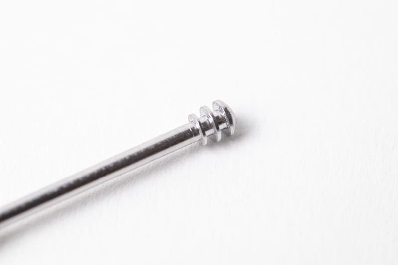
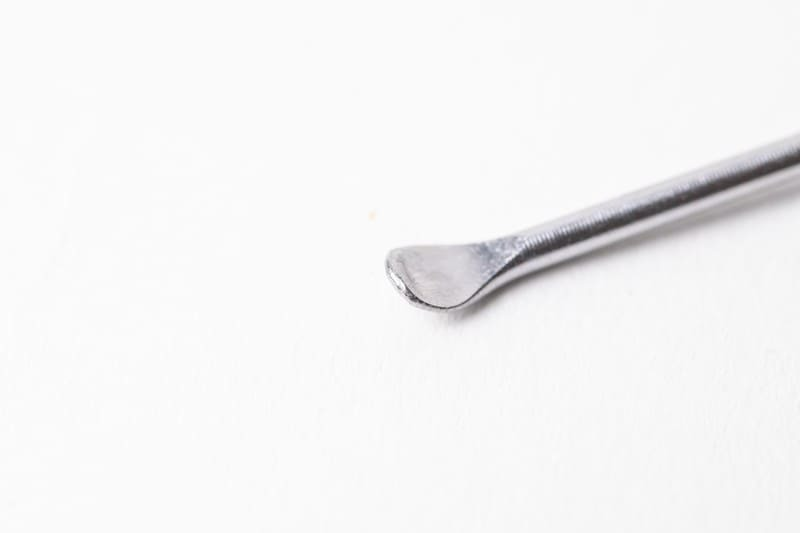

聴器がんの鍼灸
外耳・中耳・内耳に発生する悪性腫瘍です。専門医の標準治療を最優先とし、主治医許可のもとで治療の副作用緩和とQOL向上を支えます。
まず知っておきたい要点と改善の流れ
聴器がんは外耳・中耳・内耳に発生する悪性腫瘍で、外耳が最も多く次いで中耳、内耳は極めてまれです。組織型は扁平上皮がんが約7割を占め、腺様嚢胞がんや基底細胞がんなどが続きます。主な誘因は慢性的で持続的な炎症であり、特に硬い耳かきによる過度な耳掃除が外耳道の産毛や自浄作用を損ない皮膚を傷つけることが大きく関与するとされます。進行すると顎関節や顔面神経へ波及し、開口障害や顔面神経麻痺を生じます。（公式解説）
このようなお悩みはありませんか？
- ✓血が混じることもある耳だれ（耳漏）が続いている
- ✓徐々に強くなる耳の痛みや耳の中のしこりがある
- ✓口が開けにくい（開口障害）や顔の動かしにくさがある
- ✓手術や放射線・薬物療法後の倦怠感・吐き気・不眠がつらい
当院の施術アプローチ・改善の流れ
なぜ鍼灸で改善へ向かうのか？（作用機序の図解）
聴器がんに対する鍼灸は、迷走神経抗炎症反射と標準治療を支える支持療法機序を通じて、お体本来の回復力を引き出します。

手術創・リンパ節郭清側・患部を厳格に避け、内関・足三里・合谷など安全な経穴を刺激します。
内因性鎮痛系や延髄嘔吐中枢の抑制経路へ働きかけ、痛み・吐き気・しびれの軽減を助けます。
治療に伴う炎症性サイトカイン反応や過覚醒を穏やかに整え、倦怠感や不眠の負担を和らげます。
主治医の治療計画を最優先に、体力と生活の質を保ちながら治療を続けられる環境を支えます。
院長YouTube解説・関連動画
公開日：２０２２年 ８月１８日
更新日：２０２２年 ９月 ６日
本日は聴器がんについて解説させていただきます。

☆本記事の内容
- •聴器がんとは
- •聴器がんの原因
- •聴器がんの症状
- •聴器がんの改善方法
- •聴器がんのまとめ
- •聴器がんは、外耳、中耳、内耳に発生する腫瘍
- •聴器がんの原因に関係することは、耳かきを使った過剰な耳掃除
- •聴器がんの症状は、耳漏や耳の痛みなど
- •聴器がんの改善方法は、手術や抗がん剤、放射線
- •現れている症状や進んでいる状態によって、切除する範囲が変わる
銀座そうぜん鍼灸院の宗前です。
このページを書いている私は、鍼灸師として１３年、担当した利用者様数８０，０００人を誇り、病気の休職者３００人を社会復帰できるまで回復させてきた実績があります。
聴器がんの原因に関係することは、耳かきを使った過剰な耳掃除

聴器がんの原因は、慢性的に続く炎症です。特に、聴器がんの原因に関係すると言われていることは、耳かきを使った過剰な耳掃除です。
硬い耳かきを使って耳掃除をすると、外耳道を傷つけてしまうことにつながります。
もともと、外耳道には細かな毛が生えており、耳垢などを外へ出す自浄作用がありますが何度も繰り返し耳掃除をすることで外耳道の毛がダメージを受け、自浄作用が働きにくくなります。
その状態でまた耳掃除を繰り返すと、皮膚組織が傷つくことがあるのです。
聴器がんの症状は、耳漏や耳の痛みなど
聴器がんの症状は、耳漏や耳の痛みなどです。
聴器がんで現れる耳の痛みは、長く続き段々と症状が強くなっていく傾向があります。聴器がんでは、耳垂れに血が混じることもあります。
腫瘍が大きくなると、顔面神経が圧迫され顔面神経麻痺が起こることもあります。最初は表情に少しの左右差が見られ、段々と腫瘍がある側の顔が全く動かせなくなっていきます。
他にも、腫瘤ができたり口が開けにくくなったりすることもあります。
聴器がんの改善方法は、手術や抗がん剤、放射線です。がんの進んでいる状況に合わせてこれらの方法組み合わせて改善を行います。
完全に改善するためには、手術を行います。完全に改善するための手術の方法は、外側側頭骨切除術と側頭骨亜全摘術です。
がんが一定の範囲にかぎっている場合は、外側側頭骨切除術を行うことが多く、側頭骨外側切除術では切除しきれない場合側頭骨亜全摘術を行うことが多いです。手術を行った後に、放射線を使うこともあります。
聴器がんは、耳の奥に発生するため、進行すると顎の関節へと広がったり、顔面神経を圧迫して麻痺を引き起こしたりすることもあります。
聴器がんは現れている症状やがんの進んでいる状態によって、手術で切除する範囲も変わります。手術で切除する範囲が変わるということは、残すことができる機能も変わります。

がん性疼痛・緩和ケアの全身アプローチツボ図解
実際の施術ではお一人おひとりの体質・症状に合わせて選穴しますが、がん性疼痛・緩和ケアにおける標準治療併用の全身サポートの臨床でよく用いられる代表的なツボの目安です。

📌 代表的なツボの詳細一覧表を開く（6穴） ▼
| ツボ名 | 位置の目安 | 主な狙い | セルフケアの注意点 |
|---|---|---|---|
| 百会（ひゃくえ） | 頭頂部の中央 | 痛みへの不安・気分の落ち込み・睡眠の質サポート | 体力を消耗しない極低刺激で穏やかに整えます。 |
| 内関（ないかん） | 手首の横ジワから指3本分肘寄りの中央 | 吐き気・胸の苦しさ・オピオイドに伴う不快感軽減 | 点滴や採血部位を避けて安全に刺激します。 |
| 合谷（ごうこく） | 手の甲、親指と人差し指の間 | 内因性鎮痛系（エンドルフィン等）の活性化 | 腫瘍部位や転移部位への直接刺鍼は行いません。 |
| 足三里（あしさんり） | 膝の下外側、指4本分下 | 胃腸機能・オピオイド便秘予防・体力維持 | 好中球・血小板低下時は刺さない温熱や指圧に切り替えます。 |
| 三陰交（さんいんこう） | 内くるぶしの上から指4本分上 | 下半身の冷え・睡眠・全身の自律神経バランス | 浮腫が強い部位は避け皮膚を傷つけないよう配慮します。 |
| 太衝（たいしょう） | 足の甲、親指と人差し指の骨の間 | 痛みに伴う緊張・怒りや焦燥感の鎮静 | 主治医・緩和ケアチームの鎮痛薬治療と併用します。 |
国際査読論文の科学的エビデンス
国際的な医学データベース（PubMed・Cochrane等）で報告されているがん性疼痛・緩和ケアにおける標準治療併用の全身サポート領域の代表的な査読済み鍼灸研究をまとめています（標準治療との併用や研究上の限界を含めて正確に掲載）。
📚 査読論文データ・PubMed出典リンクを開く（4件） ▼
| 年・研究デザイン | 対象・規模 | 主な結果 | 限界・出典 |
|---|---|---|---|
| 2022年 国際診療ガイドライン | SIO-ASCO合同ガイドライン（227文献レビュー） | アロマターゼ阻害薬関節痛への鍼を推奨、一般的がん疼痛・筋骨格痛への鍼・指圧を推奨選択肢と明記（中等度）。 | がん自体を治す治療ではなく標準治療と併用する支持療法。 J Clin Oncol (PMID: 36122322) |
| 2020年 メタ解析 | がん関連疼痛 17 RCTs（n=1,111） | 偽鍼比で疼痛低減（MD -1.38）、鎮痛薬併用で疼痛低減（MD -1.44）およびオピオイド使用量減少（-30mg/日）。 | 異質性高くGRADE中等度。オピオイド調整は必ず主治医判断。 JAMA Oncol (PMID: 31855257) |
| 2020年 3群パイロットRCT | 化学療法誘発性末梢神経障害（CIPN）75名登録 | 通常ケア比で8週時の疼痛（p=0.05）・ピリピリ感（p=0.02）・しびれ（p=0.005）が有意改善、12週も持続。 | 単施設小規模パイロット試験。大規模検証が必要。 JAMA Netw Open (PMID: 32159808) |
| 2023年 メタ解析 | 化学療法誘発性悪心嘔吐（CINV）38 RCTs（n=2,503） | 通常制吐ケアへの併用で急性嘔吐（RR 1.13）・遅発性嘔吐（RR 1.47）の完全制御率が向上。 | GRADE低〜非常に低。標準制吐薬の上乗せ療法が前提。 Cancer Med (PMID: 37226372) |
参考文献・出典
- 銀座そうぜん鍼灸院「聴器がんの公式解説ページ」
- 2022年 国際診療ガイドライン（SIO-ASCO合同ガイドライン（227文献レビュー））— J Clin Oncol (PMID: 36122322)
- 2020年 メタ解析（がん関連疼痛 17 RCTs（n=1,111））— JAMA Oncol (PMID: 31855257)
- 2020年 3群パイロットRCT（化学療法誘発性末梢神経障害（CIPN）75名登録）— JAMA Netw Open (PMID: 32159808)
- 2023年 メタ解析（化学療法誘発性悪心嘔吐（CINV）38 RCTs（n=2,503））— Cancer Med (PMID: 37226372)
よくある質問（FAQ）
Q. 聴器がんによる耳痛や顔面神経麻痺は鍼灸で治せますか？▼
Q. 術後や放射線治療後の施術で気をつけることはありますか？▼
あわせて読まれる関連疾患（がんの種類）
耳の穴から鼓膜までの外耳道に生じる極めて希少な悪性腫瘍です。専門医の標準治療を最優先とし、主治医許可のもと副作用の緩和を支えます。
口腔がんの約6割を占め、舌の縁に多く発生する悪性腫瘍です。専門医の標準治療を最優先とし、主治医許可のもと副作用の緩和を支えます。
耳の前下にあり顔面神経が通る耳下腺に発生する希少ながんです。専門医の標準治療を最優先とし、主治医許可のもとQOL向上を支えます。
鼻の奥の上咽頭に生じ、早期に頸部リンパ節転移を起こしやすいがんです。専門医の標準治療を最優先に、主治医許可のもとQOLを支えます。
頬骨の奥にある上顎洞の粘膜から発生する副鼻腔がんです。専門医の標準治療を最優先とし、主治医許可のもとで副作用緩和を支えます。
亀頭部や包皮などに発生する希少な悪性腫瘍です。専門医の標準治療を最優先とし、主治医許可のもとで副作用の緩和とQOL向上を支えます。
おひとりで悩まず、まずはご相談ください
銀座本院・川口・大宮・横浜・博多・田無の各院でご予約を承っております。